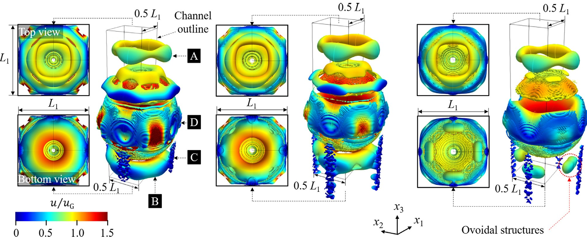

Resolving the Hidden Flow Around Confined Slug Bubbles
A slug bubble moving through a square channel nearly occupies the entire cross-section. The surrounding liquid must bypass the bubble through thin films adjacent to the flat walls and through larger passages in the four corners. These geometrically distinct pathways produce strongly three-dimensional variations in velocity, pressure, recirculation, and momentum transport.
I combined particle-tracking measurements with adaptive, interface-resolved CFD to reconstruct this hidden flow. The experiments provided direct measurements in the optically accessible central plane, while the validated numerical model resolved the complete thin-film and corner dynamics throughout the channel.
Experimental and Computational Approach
The experiments examined air slug bubbles rising concurrently with a viscous glycerol-water solution through a vertical square channel with a cross-section of $3 \times 3 \text{ mm}^2$. The transparent test section was manufactured using stereolithography with 50 µm resolution and incorporated acrylic windows for high-speed particle-shadow imaging. Particle tracking velocimetry measured the surrounding liquid flow, while custom image processing identified the bubble interface, centroid, dimensions, and rise velocity.
I developed complementary three-dimensional simulations using the interFoam solver in OpenFOAM. The model resolved incompressible, immiscible air-liquid flow using the volume-of-fluid method, with pressure-velocity coupling through the PIMPLE algorithm. The time step was adjusted to maintain a Courant number below 0.25.
A permanently refined mesh captured the narrow corner passages, while adaptive mesh refinement followed the evolving gas-liquid interface. Interface cells were refined to one-eighth of the local background-cell size and automatically coarsened after leaving the refinement region. This concentrated computational resolution where surface curvature, film thickness, and velocity gradients were greatest without applying the finest mesh throughout the complete domain.
Mesh-sensitivity and mass-conservation analyses established the reliability of the simulations. Across the three investigated conditions, the maximum difference between numerical and experimental bubble capillary numbers was approximately 5.1%, while the difference in equivalent bubble diameter remained below approximately 1.1%. The validated model was then used to analyse velocity, pressure, and geometry over approximately 100 cross-sections along each bubble.
The Engineering Challenge
The most important liquid pathways were also the least accessible experimentally. The wall films were extremely thin, while substantial transport occurred through the four channel corners outside the central imaging plane. I therefore combined high-resolution particle tracking with experimentally validated, adaptively refined three-dimensional CFD to recover the complete film, corner, pressure, and vortex dynamics.
Measurement & Modelling Principle
Particle tracking measures liquid motion near the bubble in the optically accessible central plane. The measured bubble dimensions, rise velocity, and surrounding velocity field validate a three-dimensional two-phase model. Once validated, the simulation resolves transport through the thin films and corners, including pressure gradients, local backflow, and coherent vortex structures throughout the complete channel.
Key Computational Features
- Three-dimensional, laminar, incompressible two-phase modelling.
- Volume-of-fluid interface capture.
- Dynamic refinement around the gas-liquid interface.
- Permanent mesh refinement in the channel corners.
- Courant number maintained below 0.25.
- Direct validation against bubble dimensions and rise velocity.
- Custom MATLAB analysis of ~100 bubble cross-sections.
- Three-dimensional backflow identification and $Q$-criterion vortex mapping.

What the Simulations Revealed
The validated OpenFOAM model provided complete optical access into the otherwise hidden regions of the flow, uncovering complex and highly localized transport mechanisms.
1. Local Flow Reversal
Despite the upward motion of both the bulk liquid and the bubble, parts of the liquid films and corner passages moved locally in the opposite direction. This backflow developed where the liquid passage became narrow and momentum transfer through the thin film weakened. The internal bubble circulation then influenced the adjacent liquid strongly enough to drive local reverse motion. The volume of the backflow region decreased as the imposed liquid flow rate and bubble velocity increased.
2. Distinct Film and Corner Transport
The thin films and corner passages did not behave as equivalent parallel flow paths. In the bubble-fixed reference frame, the area-averaged corner-flow velocity was approximately 50% greater than the film-flow velocity. Both pathways accelerated near the smallest bubble-wall clearance, but the pressure responses were very different: the thin-film pressure changed abruptly, whereas the corner pressure varied much more gradually over the bubble length.
3. Sharp Local Pressure Recovery
At the highest investigated capillary number, the liquid film experienced a local pressure-gradient minimum of approximately $-56 \text{ Pa/mm}$ before recovering at a positive gradient approaching $162 \text{ Pa/mm}$. This recovery occurred over only about one-tenth of the bubble length. These local gradients were far larger than the background pressure gradient in the bulk liquid, demonstrating that average channel pressure loss cannot represent the intense local dynamics surrounding the bubble.
4. Interconnected Three-Dimensional Vortices
The $Q$-criterion revealed several physically coherent vortical structures persisting across mesh refinements:
- A liquid vortex loop ahead of the bubble.
- A wake vortex behind the trailing interface.
- A dominant vortex tube inside the gas bubble.
- Small wall-adjacent vortex filaments downstream of the minimum-film region, likely forming as thin-film liquid leaves the confined gap and rapidly adjusts to the downstream bulk flow.
Validation Note: The numerical model successfully reproduced the experimentally measured bubble dynamics across three distinct operating conditions. The maximum capillary-number difference was ~5.1%, while the equivalent bubble diameter differed by no more than ~1.1%. This rigorous validation allowed the simulations to confidently examine the inaccessible corner regions and complete three-dimensional flow topology.
Journal Publication & Resources
R. Azadi and D. S. Nobes, “Local flow dynamics in the motion of slug bubbles in a flowing mini square channel,” International Journal of Heat and Mass Transfer, vol. 178, 121588, 2021.
The publication includes supplementary material showing the evolving interface, mesh generation, and velocity reconstruction during highly deformable bubble motion.